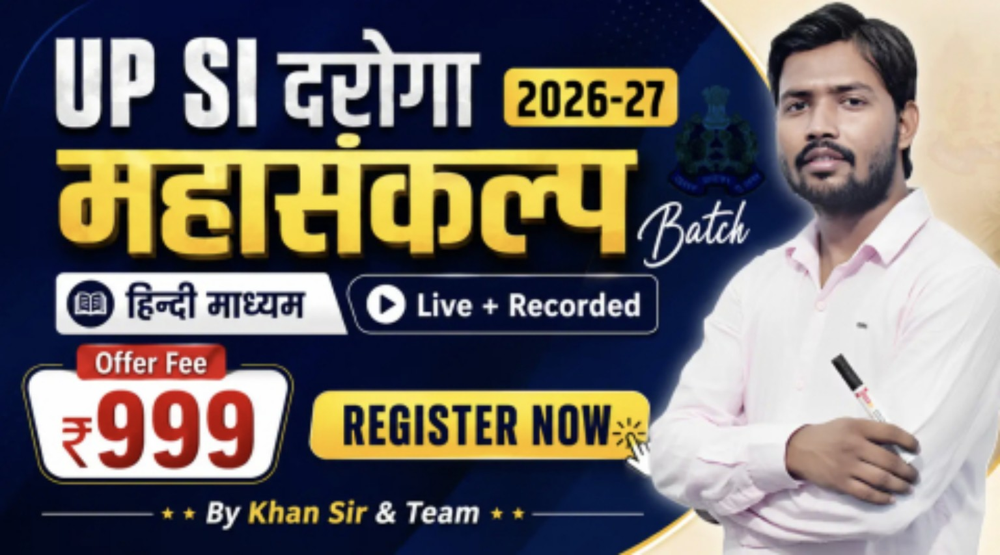

01
मूलविधि (Moolvidhi)
कानून और मूलविधि से संबंधित परीक्षा उपयोगी विषय।
Teacher: Prabhu Sirउत्तर प्रदेश पुलिस उप-निरीक्षक परीक्षा की तैयारी के लिए आपका डिजिटल स्टडी पेज। यहाँ विषयवार पाठ्यक्रम, शिक्षक सूची और परीक्षा तैयारी के मुख्य विषय एक ही जगह व्यवस्थित हैं।

विषय और शिक्षक क्रम को पढ़ाई की सुविधा के लिए कार्ड में रखा गया है।
कानून और मूलविधि से संबंधित परीक्षा उपयोगी विषय।
Teacher: Prabhu Sirभौतिक भूगोल, भारत का भूगोल और संबंधित टॉपिक्स।
Teacher: Bhanu Sirगणितीय अवधारणाएँ और परीक्षा में उपयोगी प्रश्न।
Teacher: Shubham Sirभारतीय संविधान, शासन व्यवस्था और राजव्यवस्था।
Teacher: Prabhu Sirतार्किक क्षमता और परीक्षा आधारित प्रश्न अभ्यास।
Teacher: Kartik Singh Sirभारतीय इतिहास के प्रमुख कालखंड और घटनाएँ।
Teacher: Amarendra Sirहिन्दी भाषा, व्याकरण और परीक्षा उपयोगी टॉपिक्स।
Teacher: Jitendra Soni Sirविज्ञान की मूल अवधारणाएँ और सामान्य ज्ञान।
Teacher: Rajnish Maurya Sirकंप्यूटर की बुनियादी जानकारी और महत्वपूर्ण टॉपिक्स।
Teacher: Sanjay Srivastava Sirअर्थव्यवस्था की बुनियादी अवधारणाएँ और प्रमुख विषय।
Teacher: Sukesh Sirस्थैतिक सामान्य ज्ञान और समसामयिक घटनाएँ।
Teacher: Shivam Sirगणित के अतिरिक्त अभ्यास के लिए शिक्षक सूची।
Teacher: Ashutosh Tiwari Sirतैयारी को व्यवस्थित करने के लिए मुख्य अध्ययन क्षेत्र।
व्याकरण, शब्दावली, पर्यायवाची-विलोम, वाक्य शुद्धि, मुहावरे और अपठित गद्यांश।
भारतीय संविधान, मौलिक अधिकार, कर्तव्य, शासन व्यवस्था और परीक्षा अधिसूचना में दिए गए विधिक विषय।
इतिहास, भूगोल, अर्थव्यवस्था, विज्ञान, कंप्यूटर, पर्यावरण और समसामयिक घटनाएँ।
अंकगणित, प्रतिशत, अनुपात, औसत, समय-दूरी, तार्किक क्षमता और रीजनिंग अभ्यास।
ध्यान दें: यह सामान्य तैयारी-रूपरेखा है, आधिकारिक अंतिम सिलेबस नहीं। विषयों और परीक्षा-पैटर्न की पुष्टि नवीनतम UP Police भर्ती अधिसूचना से करें।
शिक्षकों के नाम और संबंधित विषय।